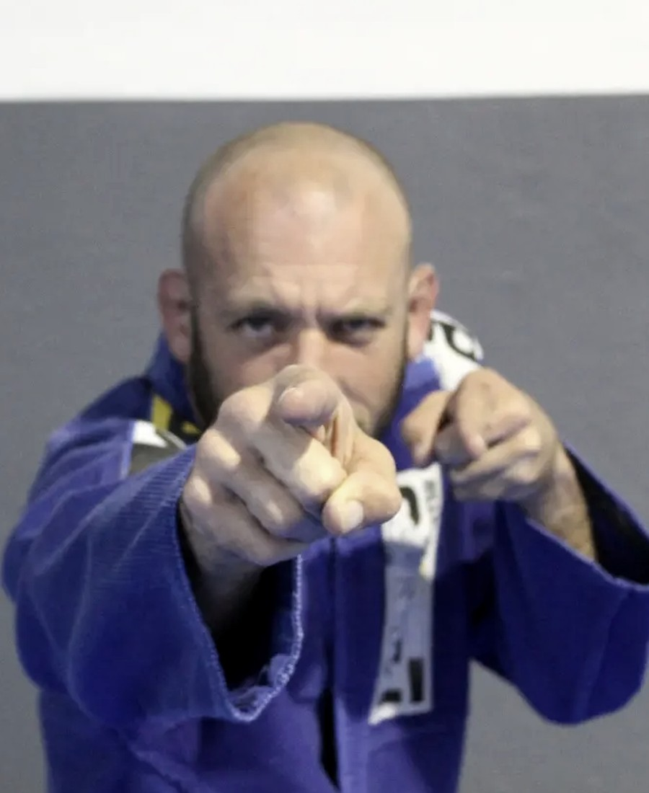

Faster learning
Focused attention lets Saul diagnose problems, correct details and accelerate progress.
Private martial arts coaching · Cape Town & the Winelands
One-to-one and small-group Jiu-Jitsu and martial arts coaching with Professor Saul Abelson. Personal, flexible and structured around your goals, schedule, experience, body and individual needs.
Why private?
Focused attention lets Saul diagnose problems, correct details and accelerate progress.
Intensity, partners and progression are controlled around your level, history and needs.
Train when and where it works for you, with mobile coaching across greater Cape Town and the Winelands.
Beginner or fighter, child or adult, gi or no-gi: the coaching adapts to the person in front of Saul.
Training options
Start with your objective, not a generic timetable.

Fully personalised attention. Build skill, confidence and a game that works for your body.
Refine fundamentals, solve specific problems and sharpen advanced details in gi or no-gi.
Practical control, striking awareness and decision-making drawn from Saul’s broader martial-arts background.
Structured, patient coaching for children of different ages, temperaments and abilities, including special needs.
High-level technical work for serious practitioners, competitors and professional fighters.
Train with a partner, spouse, family or small group without losing the benefits of individual attention.

Meet Saul
Professor Saul Abelson has spent more than 25 years training, teaching and coaching across multiple martial arts. His approach is technical, practical and deliberately adaptable.
“The coaching should fit the person, not force the person to fit the coaching.”Working positioning line · replace with approved Saul quote
Train where you are
Private coaching at your home, gym, workplace or an agreed venue. Saul currently travels to clients in the Cape Town region and the Winelands, including Val de Vie.
Discuss your locationTestimonials
Client feedback on Saul’s coaching, discretion and ability to adapt the training to the person in front of him.
Private client testimonialI cannot recommend Saul strongly enough. I have trained with a lot of different people, but Saul is one of those rare coaches who understands that good training is about more than simply teaching technique.
From the outset, he was extraordinarily accommodating of my circumstances and consistently went out of his way to make training workable. At the same time, he was completely discreet. I never felt that I had to explain more than I wanted to, nor that anything discussed or observed would become anyone else's business.
He has earned my trust and my respect. Saul's gentle, polite and professional demeanour earns both naturally. He is calm, intelligent, patient and highly attentive to the person he is training rather than simply running through a syllabus.
Saul and Chacma-BJJ have provided an unusually positive training environment for me, and I am genuinely grateful for all his time, patience and expertise.
For anyone looking for serious Brazilian Jiu-Jitsu instruction from someone with both competence and character, I would recommend Saul without reservation.
Ready to start?
Tell Saul what you want to achieve, where you are and any practical constraints. The first step is a conversation, not a sales funnel.
WhatsApp Saul directly to discuss your goals, location and availability.
Discuss private trainingQuick conversation · no obligation · privacy respected